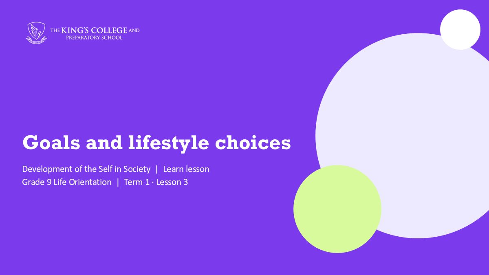

Term 1 · Lesson 3 · Learn lesson
Goals and Lifestyle Choices
Start Here
Today I Will
- Explain how values guide lifestyle choices
- Set SMART goals in different areas of life
- Identify influences on my choices
Imagine yourself at the end of matric. What do you want to be true about you then? What must you start now?
Words to Know
| Word | Meaning |
|---|---|
| Values | Beliefs about what is right and important that guide your choices. |
| Lifestyle choices | The everyday decisions you make about health, time, friends and habits. |
| Goal | Something you plan and work towards. |
| Short-term goal | A goal you can reach soon (days or weeks). |
| Long-term goal | A goal that takes months or years. |
| Influence | Something or someone that affects your choices. |
Slides

Notes
Every day you make small choices about sleep, food, screens, friends and how you spend your time. These lifestyle choices add up. Your values guide the choices, and your goals give them direction.
Values: What Guides My Choices
Values are beliefs about what is right and important, such as honesty, respect, health, faith, family and hard work. When you know your values, decisions become easier: you can ask 'Does this fit what I believe is right and important?' When your choices go against your values, you often feel guilt or stress.
Lifestyle Choices
Lifestyle choices are the everyday decisions you make about your health, time and habits. Healthy choices (enough sleep, good food, exercise, limited screen time, positive friends) give you energy and help you reach your goals. Unhealthy choices (late nights, energy drinks, skipping meals, substance use, too much screen time) slowly harm your health, mood and marks.
| Area | Healthy choice | Unhealthy choice |
|---|---|---|
| Sleep | 8–10 hours on school nights | Gaming or scrolling past midnight |
| Food | Breakfast, water, fruit and vegetables | Skipping meals, energy drinks, junk food |
| Exercise | Sport or activity most days | Sitting for hours |
| Screens | Phone out of the bedroom at night | Endless scrolling |
| Friends | Friends who share your values | Friends who pressure you into risk |
Setting SMART Goals
A goal is something you plan and work towards. A short-term goal can be reached soon (days or weeks); a long-term goal takes months or years. Long-term goals are reached through a series of short-term goals. Make each goal SMART:
- Specific: exactly what you want ('70% for Maths', not 'do better').
- Measurable: how you will know you got there.
- Achievable: realistic for you.
- Relevant: it matters for your values and future.
- Time-bound: by when.
Not SMART: 'I want to be fitter.'
SMART: 'I will run 3 km three times a week so that I can finish the 5 km school fun run in under 30 minutes by the end of Term 1.'
Goals in Four Areas of Life
| Area | Example goal |
|---|---|
| School | Average 65% by June by studying 30 minutes each weekday. |
| Health and sport | Sleep 8 hours on school nights; train three times a week. |
| Relationships | Have supper with my family without my phone four nights a week. |
| Faith and character | Serve once a month at youth group or a community project. |
Influences on Lifestyle Choices
- Media: adverts and influencers sell a 'normal' that may not be healthy (e.g. energy drinks for gamers).
- Friends: can pull you towards or away from your goals.
- Family: routines, values and example at home.
- Faith: God's truth gives a solid base for choices.
- Environment: what is available and safe where you live.
- Yourself: in the end, you choose. Being assertive helps you stick to your choices.
Habits: Small Choices, Big Results
A habit is a choice you repeat so often that you do it without thinking. One late night does little harm; a habit of late nights affects your mood, health, concentration and marks over months. The good news is that habits can be changed, especially one small step at a time: phone out of the bedroom, water instead of an energy drink, a set study time each day.
Case Study: Thabo Starts Again
Thabo loved rugby, and his goals were all about the rugby field. When King's moved from rugby to basketball, he felt lost: his long-term goal no longer made sense, and he stopped training and started spending hours on his phone. Coach Ricardo noticed and invited him to try basketball practice, telling him that his strength, fitness and teamwork would still count. Thabo set a new short-term goal: 'attend every basketball practice this term', and a long-term goal: 'make the second team by the end of the year'. He also set a goal for school: 'study Maths for 30 minutes on four days a week'. Changing his goals did not mean giving up who he was; it meant using his strengths in a new way.
Questions to think about: How did a change outside Thabo's control affect his goals and lifestyle? Which of his new goals are short-term and which long-term? Which value helped him start again?
When Goals Have to Change
Sometimes life changes our plans: an injury, a move, a subject we don't get, or a change at school. Being flexible is not failure. Ask: What still matters to me (my values)? What strengths do I still have? What new goal can I set? Adapting your goals while keeping your values is a sign of resilience.
Worked Exam Answer
Question: Analyse how values can guide a teenager's lifestyle choices. (1 x 4) (4)
Answer: If a teen values their health ✓ they are more likely to choose enough sleep, good food and exercise ✓ especially when friends pressure them to stay up late or try substances ✓ so they have more energy and are more likely to reach their goals ✓.
Be able to define values and lifestyle choices, write a SMART goal from a vague wish, and analyse how one lifestyle choice affects a goal (statement, explanation, qualifier, outcome).
Know your values, set your goals, and choose your influences.

What would it look like to commit your goals to the Lord this year?
In Class: My Goal Map
- Write one SMART goal in two of the four areas.
- Next to each, write one value it connects to.
- Write one influence that could stop you, and how you will handle it.
- Share one goal with a partner; they check it is SMART.
Test Yourself
- What are values?
- Give an example of a long-term goal.
- Name two influences on lifestyle choices.
Show answers
1. Beliefs about what is right and important that guide choices. 2. e.g. becoming a nurse, passing matric. 3. Any two: media, friends, family, faith, environment.
Finished Early?
Turn a vague wish into a goal you can actually reach.
- Choose one wish: 'I want to sleep better', 'I want to do better in Maths' or 'I want to get fitter'.
- Rewrite it as a SMART goal and label the S, M, A, R and T parts.
- Write one value the goal connects to (e.g. health, hard work, family).
- Write one influence that could pull you off track, and how you will handle it.